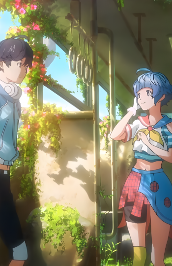
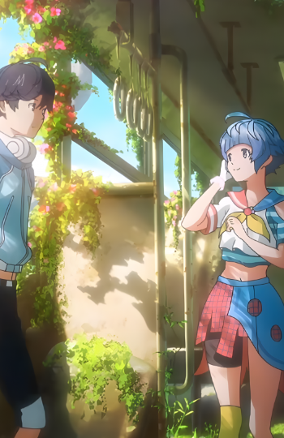

Bubble
Director: Tetsurō Araki
In an alternate world, bubbles raining down upon the world have broken the laws of gravity. For the Japanese, Tokyo has been completely cut off from the outside world, and all that remains are groups of young people competing in parkour team battles across the skyline of Tokyo. Hibiki, a reckless but talented ace, accidentally slips from the Tokyo tower, but after plummeting into the gravity-bending sea below and getting trapped In a train car he is saved by Uta, a girl with mysterious powers. What bonds the pair together is their ability to hear a sound only audible to them.
 
